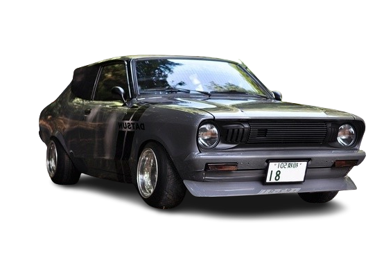

NISSAN B211
NissanSunny
S
P
O
R
T
Y

The Nissan Sunny is an automobile built by the Japanese automaker Nissan from 1966 till 2004. In the early 1980s, the brand changed from Datsun to Nissan in line with other models by the company. Although production of the Sunny in Japan ended in 2004, the name remains in use in China and GCC countries for a rebadged version of the Nissan Almera.
Purchase
1498 cc Petrol engine
60miles per hour
Automatic/Manual
50 kW (68 hp)